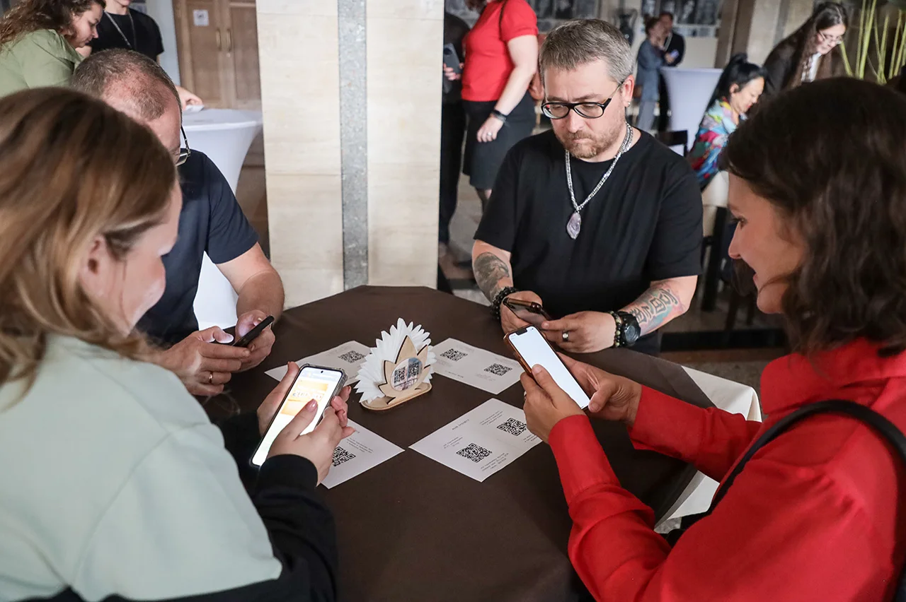

Через двести, триста лет
Барнаул · Молодёжный театр Алтая · 2025
Медиахудожник проекта.
Спектакль-инсталляция Евгения Маленчева, созданный вместе с драматургом Екатериной Августеняк. В основе — истории барнаульских подростков о будущем города, природы, технологий и отношений между людьми.
Зрители перемещаются по зданию театра, встречаясь с инсталляциями, перформансами и цифровыми сюжетами. Я участвовал в проекте как медиахудожник. Композитор — Андрей Платонов. Премьера состоялась 18 сентября 2025 года на фестивале имени Валерия Золотухина.
Фотографии и изображения
